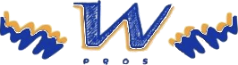
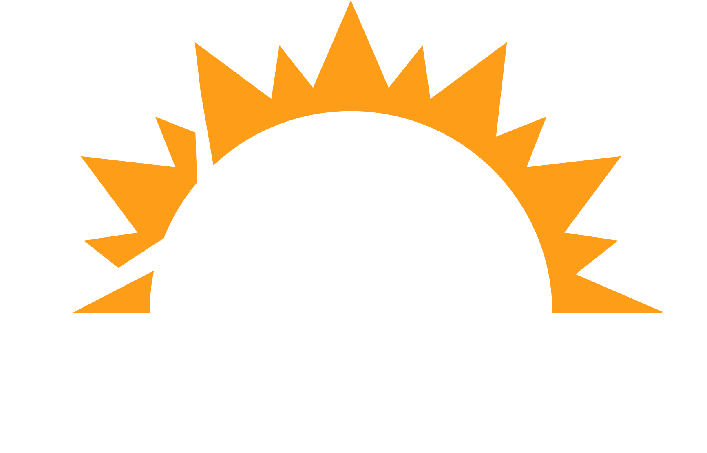

Top del mes · WindMar Pros
Rellena y descarga. 1080×1350.
Mes y año
Nombre
Reconocimiento
TOP CLOSER · closed deals
TOP SETTER · appointments set
Cifra
Métrica
Foto, recortada y en PNG
Descargar PNG
Quitar la foto
La métrica va atada al tipo.
Al cambiar entre closer y setter se cambia sola, porque son lo que más fácil se cruza: el vídeo de Miguel salió llamándolo «#1 CLOSER» cuando en el tablero es setter. Se puede corregir a mano si hace falta.
AUGUST 2026


PROS
JORGE BARRERA
TOP
CLOSER
arrastra la foto aquí
17
CLOSED DEALS